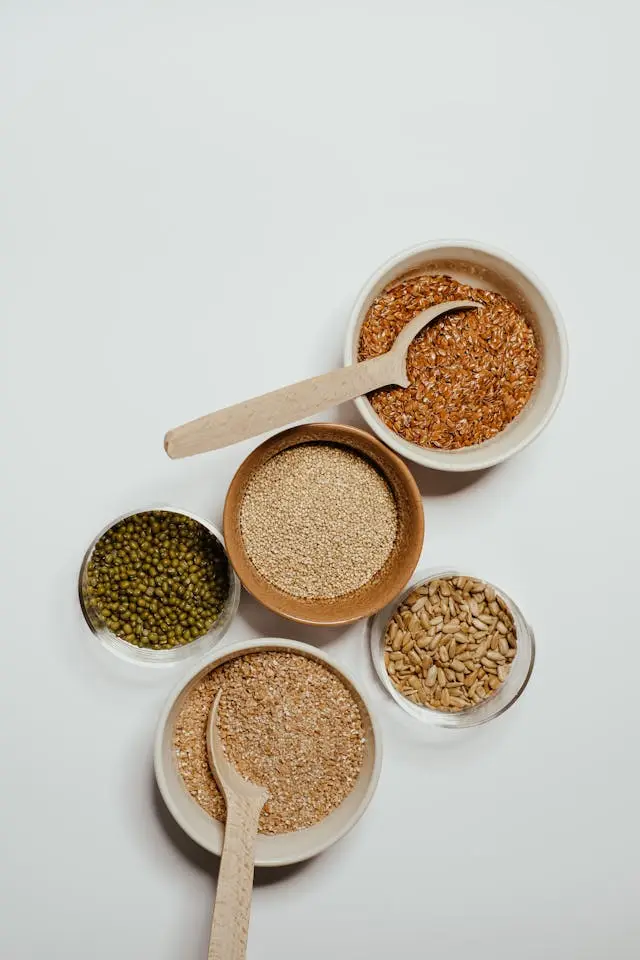
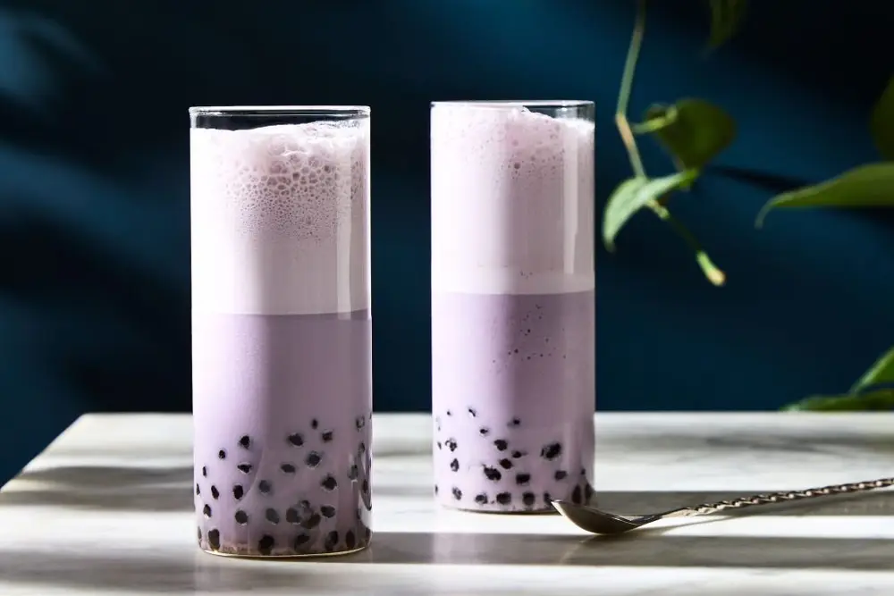

Articles / Recipes
A delicious health boost – How to make Taro quinoa mix!
2025-09-29 · New products, Recipes, New products, Recipes

Original public content from Yen Chuan. Product claims and specifications remain subject to confirmation by the company.
Want to breath some fresh air into the classic taro bubble tea? Why not go for quinoa? Our Taro quinoa mix adds an extra healthy boost to this beloved drink. Read on to learn more!

Why quinoa?
Quinoa started off as a humble staple crop in South America for thousands of years, but has since enjoyed a boost in popularity recently. In fact, the United Nations even declared 2013 to be the Year of Quinoa!
It’s for a good reason though – aside from being an important crop for food security, people in the West have also marketed the crop as a “Superfood” thanks to the sheer health benefits it offers!
Quinoa not only provides an energy boost, but also a mix of essential nutrients. From proteins and dietary fibres to vitamins and minerals, quinoa has it all!
Moreover, as it’s a gluten-free grain, it’s safe for people with gluten allergy.
How many types are there?
Thanks to a millenia of cultivation, this grain comes in a number of colourful variants! However three of them are the most widely available – white, red and black.
White
The most common type!
Although it’s called “white quinoa”, once cooked it often takes on a more ivory-white hue.
Thanks to its soft, fluffy texture after cooking, this is the best replacement for rice.
Red
Compared to its white counterpart, red quinoa has a more firm texture even after cooking.
It also tastes richer than the white variant, with a nuttier undertone.
Perfect for salads or other dishes that need a dash of colour!
Black
This type of grain features a sweeter, more earthy taste.
Its colour also gives a striking appearance.
Perfect for making desserts, sweet porridges, or in our case: bubble tea!
Want to give this superfood a try, but don’t have the time or energy to fire up the stove?
You’re in luck, our Taro Quinoa Mix makes it easy! Simply mix with water, and you’ll have a sweet, hearty and nutritious drink in no time!

Taro Quinoa Mix
A delicious blend of taro and quinoa. Taro gives the drink a creamy, sweet and nutty base, while the grains lend an flavourful chew to the mix!
What you’ll need
How to make
Add the powder and the hot water to a mixer or shaker. Mix until smooth.
Steam milk to create milk foam, ladle on top of the drink (optional)
Sprinkle on some ground nuts for garnish. Enjoy!
Want some extra bubble tea goodness? Cook up some tapioca pearls and add to the drink. Feeling more health-concious? Try our range of canned toppings for a change!
Give it a try!
And there you have it – pretty easy, right?
To get started, simply drop us a message to get the ingredients!